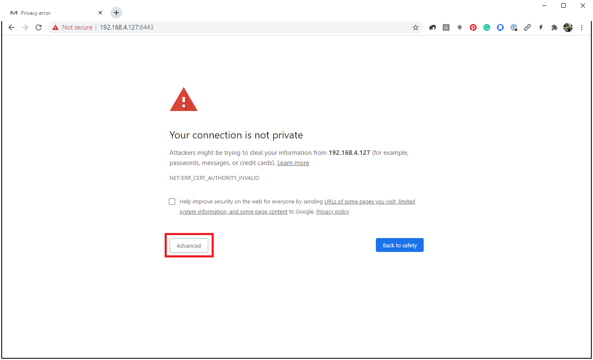
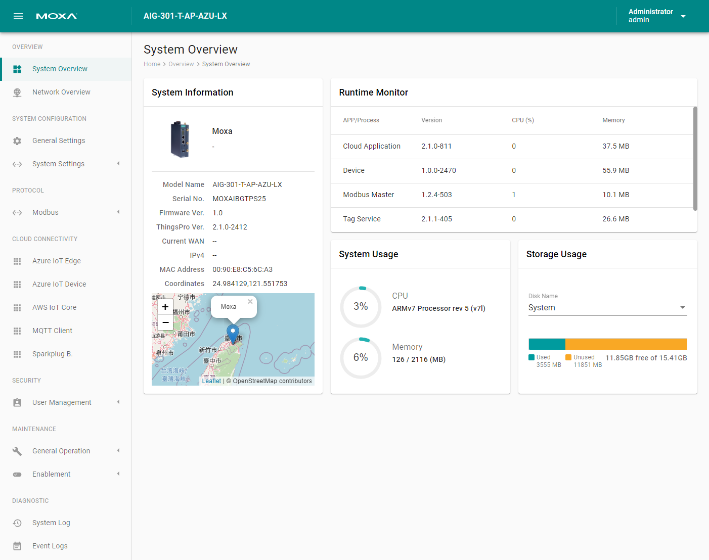

Initial Configuration
To get ThingsPro Edge up and running with the default settings, do the following:
Note: We recommend using Google Chrome because ThingsPro Edge has been tested and verified on the browser. >HTTPS only supports TLS 1.2 encryption; ensure that your browser support TLS 1.2.
-
Launch ThingsPro Edge.
Note: HTTP has been disabled by default to avoid security risks. The default HTTPS port is 8443 because Azure IoT Edge uses port 443 as its default.
a. Connect LAN 2 to the default IP 192.168.4.127 and enter
https://192.168.4.127:8443in the address bar of the browser. Because the SSL certificate is self-signed by Moxa, you will see a warning message from the browser.
b. Click on the Advanced button to proceed. c. Click on the Proceed to 192.168.4.127 (unsafe) link to connect to ThingsPro Edge.

You will see the ThingsPro Edge homepage.

-
Login using the default Account & Password.
Account:
adminPassword:admin@123
Note: For security reasons, we suggest changing the default password after the first login.
-
Configure your system and start transmitting data.
- Overview: Dashboard to monitor the system and network status
- System Configuration: All system and device configuration settings
- Protocol: Modbus connections settings
- Cloud Connectivity: Data transmission and remote management settings to connect your IIoT gateway to the cloud
- Security: User access control and role management to restrict access to this IIoT Gateway
- Maintenance: Operation and maintenance tasks such as reboot (the IIoT gateway), configuration import/export, and the main switch for system services and applications
- Diagnostic: Event logs to help you understand the events on the IIoT gateway and the system log to troubleshoot system issues or to send information to Moxa Technical Support.
